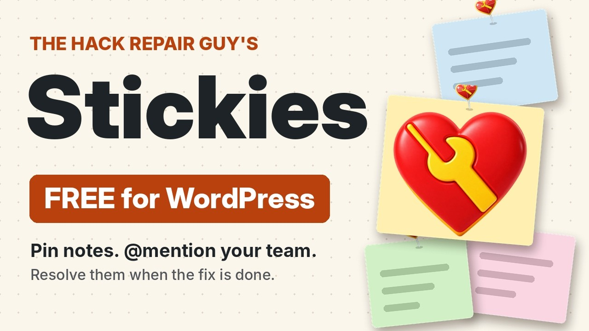
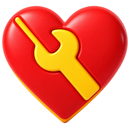

Leave a note right where the problem is.
Stickies pins a sticky note to the exact spot on any page of your WordPress site. Mention a teammate, and mark the note resolved when the fix is done.
Free and open source (GPL-2.0-or-later). Needs WordPress 6.9.4 or newer and PHP 7.4 or newer.
See it work in 85 seconds
Add a note, mention a teammate, and watch it get resolved.

Free, and updates arrive inside WordPress.
What you get
A small toolbar on the left edge of every page. Everything else happens on the page itself.
Pin notes anywhere
Click the note button, then drag the note to the spot. It stays there for everyone on your team, even when the window changes size.
Mention a teammate
Type @ and pick a name. They get an email with a link straight to the note.
Choose who sees it
Show a note to the whole team, only the people you mention, or just you.
Resolve it when it's fixed
One click tucks the note away, with an Undo. Resolved notes stay in the list, and you can reopen them.
Moves and colors stick
Drag, resize or recolor a note and it saves the moment you let go. Five colors, and keyboard controls too.
One list for the whole site
See every note in the dashboard, with search, filters, and bulk resolve, reopen and delete.
You decide who can use it
Give each WordPress role permission to see notes, add notes, or manage everyone's notes.
Works in the dashboard too
Leave notes for your team inside wp-admin, and open the list from the admin bar.

Your notes stay on your site.
Notes live in your own WordPress database and load only for logged-in people with Stickies access. Visitors never see them, and nothing loads for them. Stickies is not a public comment system.
Install it in a minute
- Download the zip from the button below.
- In WordPress, open Plugins, Add New, Upload Plugin and choose the zip.
- Activate it, open any page of your site while logged in, and click the note button on the left edge.
Later updates arrive on the normal Plugins screen, from this project's GitHub releases.